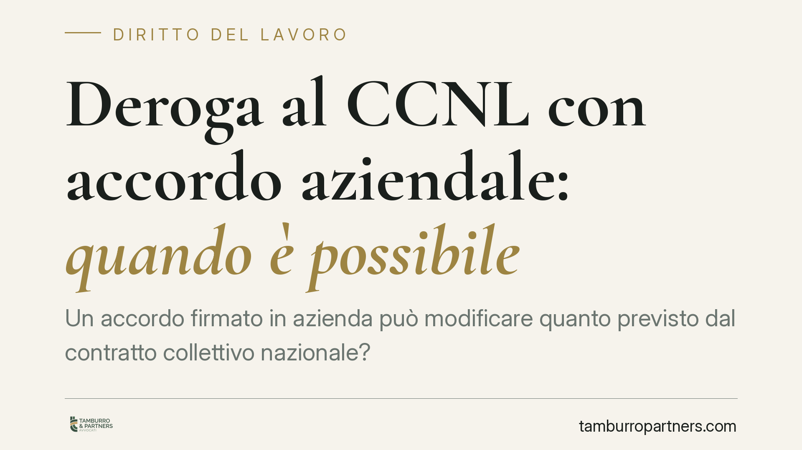

Deroga al CCNL con accordo aziendale: quando è possibile
Un accordo firmato in azienda può modificare quanto previsto dal contratto collettivo nazionale? La risposta non è netta: dipende dal tipo di intesa, dalla materia toccata e dal rispetto di precisi vincoli di legge. In alcuni casi la deroga arriva persino a incidere su norme di legge. Vediamo cosa dice l'ordinamento e cosa verificare prima di firmare.

Il rapporto tra CCNL e accordo aziendale
Il contratto collettivo nazionale di lavoro (CCNL) fissa il quadro generale delle condizioni economiche e normative per un intero settore. L'accordo aziendale (o "contratto di secondo livello") si colloca a un gradino più basso e regola aspetti specifici di una singola realtà produttiva.
Per molto tempo ha operato il principio del cosiddetto "favor", secondo cui il livello inferiore poteva intervenire solo per migliorare le condizioni fissate da quello superiore. Oggi il quadro è più articolato: la contrattazione aziendale può anche introdurre condizioni diverse, purché nel rispetto dei limiti che l'ordinamento stabilisce.
Inquadramento normativo
Il riferimento centrale è l'art. 51 del D.Lgs. 81/2015, che parifica sul piano funzionale i contratti collettivi nazionali, territoriali e aziendali, purché stipulati da associazioni sindacali comparativamente più rappresentative sul piano nazionale (o dalle loro rappresentanze in azienda, come RSA e RSU). In molte materie è la stessa legge a rinviare al "contratto collettivo" senza distinguere il livello: questo apre spazio alla contrattazione di prossimità.
Il passaggio decisivo è l'art. 8 del Dl 138/2011 (convertito in L. 148/2011). La norma consente ai contratti aziendali o territoriali "di prossimità" — sottoscritti dalle rappresentanze sindacali con maggiore rappresentatività — di introdurre deroghe non solo al CCNL, ma anche a disposizioni di legge, entro un elenco tassativo di materie: organizzazione del lavoro e degli orari, mansioni e classificazione del personale, contratti a termine e a orario ridotto, disciplina del rapporto di lavoro (comprese modalità di assunzione), conseguenze del recesso.
Queste intese hanno efficacia verso tutti i lavoratori dell'azienda se stipulate secondo il criterio maggioritario e nel rispetto dei limiti costituzionali e delle norme comunitarie. Restano invece esclusi i diritti fondamentali indisponibili.
Va ricordato anche l'art. 29 del D.Lgs. 276/2003 in materia di appalto e responsabilità solidale, spesso interessato da questi accordi quando si ridisegnano assetti organizzativi.
Cosa cambia in concreto
Le materie tipicamente oggetto di deroga aziendale sono quelle a impatto immediato sull'organizzazione:
- Orario di lavoro: distribuzione, turnazioni, banca ore, straordinari.
- Premi di risultato: legati a produttività e obiettivi misurabili, con i noti benefici fiscali quando ricorrono i requisiti di legge.
- Smart working: modalità, fasce di reperibilità, diritto alla disconnessione.
- Inquadramento e mansioni, entro i limiti dell'art. 2103 c.c.
Per il datore di lavoro questo significa poter adattare le regole del CCNL alle esigenze reali dell'impresa, con maggiore flessibilità gestionale. Per il lavoratore comporta un rischio concreto: alcune tutele possono essere ridimensionate, purché l'intesa rispetti forma, soggetti firmatari e materie ammesse. La Cassazione ha più volte ribadito che le deroghe ex art. 8 sono legittime solo se rientrano rigorosamente nei confini della norma; fuori da quei limiti l'accordo non produce effetti derogatori.
È un errore diffuso ritenere che qualsiasi accordo firmato in azienda "batta" il CCNL. La deroga peggiorativa richiede il presupposto della rappresentatività qualificata e il rispetto dell'elenco tassativo delle materie. Un accordo firmato da soggetti privi di tale requisito non ha la stessa forza.
Cosa fare in concreto
- Verificate i firmatari. Controllate che l'accordo sia sottoscritto da RSA/RSU o sindacati comparativamente più rappresentativi: senza questo requisito l'efficacia derogatoria vacilla.
- Individuate la materia. Se la deroga tocca la legge, accertate che rientri nell'elenco tassativo dell'art. 8 Dl 138/2011; fuori da quelle materie la deroga è inefficace.
- Leggete l'ambito di applicazione. Chiarite se l'intesa vincola tutti i dipendenti o solo alcuni gruppi, e con quale criterio maggioritario è stata approvata.
- Confrontate condizioni prima e dopo. Mappate quali tutele del CCNL vengono modificate e in che misura, distinguendo deroghe migliorative e peggiorative.
- Chiedete una verifica prima di firmare. Consigliamo di sottoporre il testo a un controllo tecnico: un accordo mal redatto può risultare nullo o esporre l'azienda a contenzioso.
Disclaimer
Contributo informativo a cura di Tamburro & Partners - Avv. Giuseppe Tamburro. Non costituisce parere legale.
Ogni storia di lavoro ha i suoi tempi.
Se gestisci HR e vuoi un confronto su contenzioso, ispezioni o licenziamenti, scrivi allo studio. Ti rispondiamo entro un giorno lavorativo.